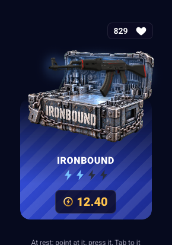
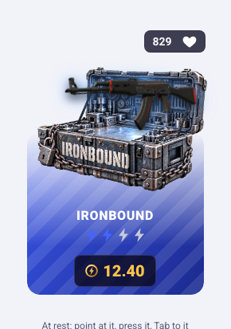
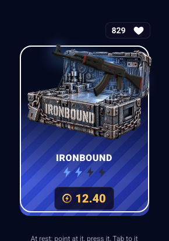
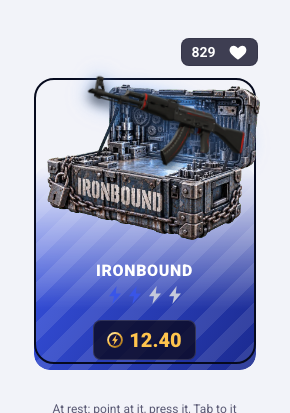
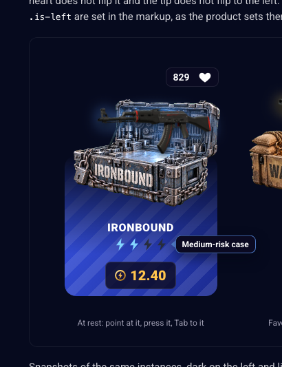
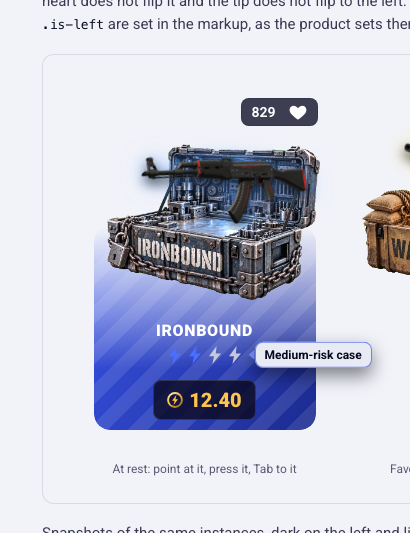
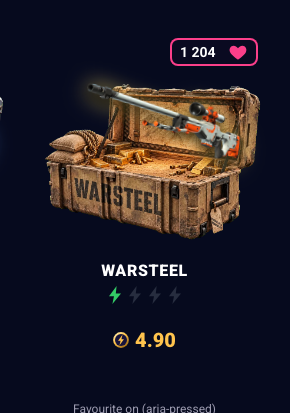
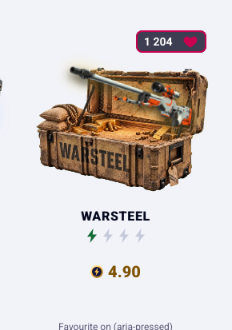
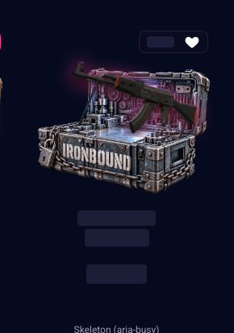
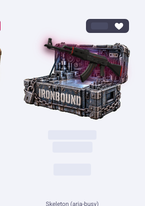

Case tile
A case as Home draws it, with no plate at rest: the case with its skin, its name, its risk as four bolts and its price in gold with the coin. Pointed at, the tile takes its own card in the case's colour, the case swells, the skin lifts and the price stands on a dark plate. Everything on this page is drawn by design/system/components/case-tile.css through index.css, the same file a screen will load.
Anatomy

The tile holds four atoms and never redraws them: the Media slot (the case's picture), the Favourite toggle, the Icon (the bolts and the coin). The Figure is on its inventory row, but the product's tile has never worn .fig: its price is the tile's own .case-tile__cost, and a Figure there would redraw the number. The tile's own part is its shape, its face link, the card that rises under the pointer, the risk row and its tip, the price plate and the corner pill of the favourite.
| Part | Class or element | What to change there |
|---|---|---|
| The tile | .case-tile (an <article>) | the corner (--radius-m), the 36px strip over the case where the favourite sits, the centred column |
| Face link | .case-tile__link | one link over the whole face; its words are its aria-label (name, price, risk band) |
| Card under the pointer | .case-tile__fx | the plate in the case's colour, fading out toward the case so the case rises out of it; drawn, never clicked |
| The case | .media.media--case.case-tile__art (Media slot) | the picture is --case-art and its light --case-glow; the tile sets the 124 percent width and the shift that puts the case's body on the centre line |
| Name | .case-tile__name | the case's name in capitals, weight 900 |
| Risk | .case-tile__risk[data-risk] with .case-tile__bolts (four Icons, .is-on lit) | the band's colour, the count lit; its words stay for a screen reader |
| Risk tip | .case-tile__tip (.is-left where the right has no room) | the band in words beside the bolts under the pointer; the screen's script sets .is-left |
| Price | .case-tile__price > .case-tile__cost with .icon--coin | the coin and the figure in gold; under the pointer the price takes a dark plate |
| Favourite | .fav.case-tile__fav (Favourite toggle) with .case-tile__count | the tile redraws the pill small in the tap area and shows it under the pointer; the atom's own pressed look stays |
| Missing figures | .is-missing on the risk and the cost, .case-tile__gone | a figure whose source fails says so in words, never a zero (D-246) |
Variants and sizes
One axis of data and one of form. The colour is the case's, not the screen's: it names the light round the case and the card the tile takes when it is pointed at. Heights and widths below are read from the rendered tiles, not from the stylesheet.
- Colour = the case's own. Pink is the default;
--blue,--violet,--goldand--emberare the other four. A screen never picks a colour for its look. Each sets--case-glow(the Media slot reads it) and--case-plate(the card under the pointer). - Form = what is known. At rest, favourite on, risk or price not available, favourite count not available, and the skeleton (
aria-busy) while the catalogue loads. - Width = the grid's. The tile has no size of its own: Home lays five to a row, the catalogue's shelf four, a phone two (the Case grid, round 3).
Pink (the default)


Form
Favourite on: the pill stays shown, edged in pink
Count not available
The skeleton: the base case and bars in the busy wash, the tile's own shape so the grid does not reflow
When to use
To offer one case for opening: its name, how risky it is and what it costs, and nothing else. The price is in the coin, gold, with the peg printed wherever money is spent (D-28). The risk is four bolts and a band in words, because a case whose odds hide inside the excitement breaks design principle 3 (clarity at every risk moment). A tile is a doorway to the case screen, where the odds, the cost and the expected value stand beside the act; it is not where the money is spent. A figure that cannot be read says so in words and never draws a zero or a default band (rule 3 of node 0.11, D-246).
Rule and anti-rule
Use it
Home's row of five and the catalogue's shelf: one case, one tile, the Case grid places them. The colour is read from the case, the favourite is the Favourite toggle in the tile's corner, the picture is a Media slot.
Take another component
A skin in a case's list is a Drop card. A live drop in the ticker is a Feed tile. A choice of how to play is a Mode card. A press that opens a case is a Button on the case screen, not a tile. A figure that stands alone is a Figure.
States
Live at rest, on this page's theme: point at the tile, the bolts and the corner, reach the tile with Tab. At rest on a pointer device the favourite is hidden until the tile is pointed at or focused; kept shown when on. The page does not run the product's script, so pressing the heart does not flip it and the tip does not flip to the left: the pressed tile, the skeleton and .is-left are set in the markup, as the product sets them.
At rest: point at it, press it, Tab to it
Favourite on (aria-pressed)
Skeleton (aria-busy)
Snapshots of the same instances, dark on the left and light on the right, taken with reduced motion so each shows the face the state settles on. The base set is shot once on the blue tile; after it, only a named difference.


--bg-act-stripes, --bg-mode-battles, --text-money-on-plate

--line-focus

--text-risk-mid, --text-risk-off, --bg-tile

--line-lit, --text-hi

--color-disabled- The same answer, said once: the tile has no press look (kit.css draws none), so none is shot. The favourite keeps its atom's own hover and focus ring; the tile only decides when it shows. The ring on the face link is
--line-focus, outside the tile's corner. - No disabled look. A case that cannot be opened refuses with its reason on the case screen and stays live (D-58); a tile never draws itself disabled. What a tile cannot know it says in words (D-246).
- Missing and gone are shown in Form above. They are not interactive states and are not shot.
node design/kit/tools/shoot-states.js http://localhost:8765/ case-tile # re-shoot after a change to case-tile.css or its tokens node design/kit/tools/shoot-states.js http://localhost:8765/ case-tile --check # step 9: fails if a snapshot drifted
In the code
| Token | Kind | Dark | Light |
|---|
Read live from tokens.css. The tile needs no component token: every state found its role. Geometry (--radius-m, --space-*, --size-check, --size-tap), type, motion and the tile's own --case-tile-fav-strip and --case-tile-risk come from the primitives and the block. Colours read directly, all waiting for step 9: --color-blue and --color-gold (two of the six with one reader per surface), --color-rare-fire, --color-fav-plate, --gradient-case-violet, --gradient-fade-up, --shadow-tip (read in this block only), --color-price-plate, --shadow-price-edge and --color-disabled (no role yet). The fourth risk band reads the role --text-risk-extreme, shared with the Commit block (D-266, Q1).
File: design/system/components/case-tile.css, loaded by design/system/index.css in the molecules' group.
<article class="case-tile case-tile--blue">
<a class="case-tile__link" href="..." aria-label="Ironbound, 12.40 coins, Medium-risk case">
<span class="case-tile__fx" aria-hidden="true"></span>
<span class="media media--case case-tile__art" aria-hidden="true" style="--case-art: var(--art-case-ironbound)"><img src="..." alt=""></span>
<span class="case-tile__name">Ironbound</span>
<span class="case-tile__risk" data-risk="medium">Medium-risk case<span class="case-tile__bolts" aria-hidden="true">...four .icon.icon--bolt, .is-on lit...</span><span class="case-tile__tip" aria-hidden="true">Medium-risk case</span></span>
<span class="case-tile__price"><span class="case-tile__cost"><span class="icon icon--coin" aria-hidden="true"></span>12.40</span></span>
</a>
<button class="fav case-tile__fav" type="button" aria-pressed="false" aria-label="Favorite, marked by 829 people"><span class="case-tile__count">829</span><span class="icon icon--heart" aria-hidden="true"></span></button>
</article>
Stands on: Home, the catalogue. Until step 8 those screens still read kit.css; step 6 moves their markup onto this file's forms. The rules the Case grid writes on this class (.case-grid__cell > .case-tile) stay in kit.css until the organism is carried in round 3.